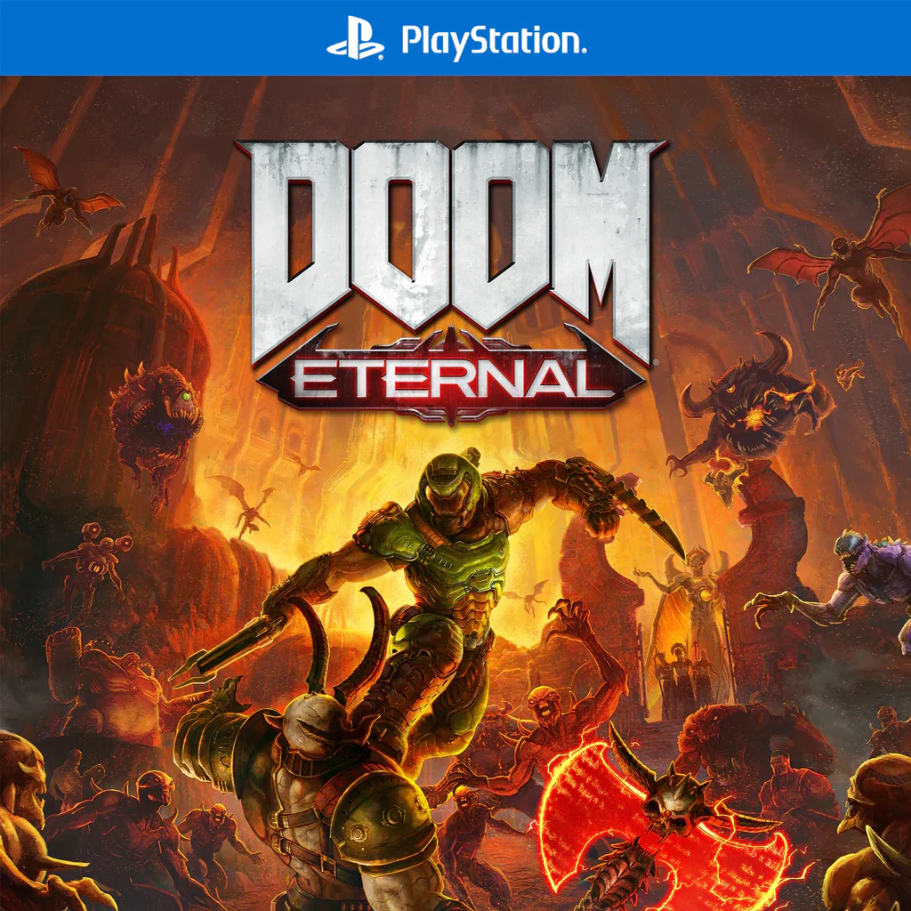
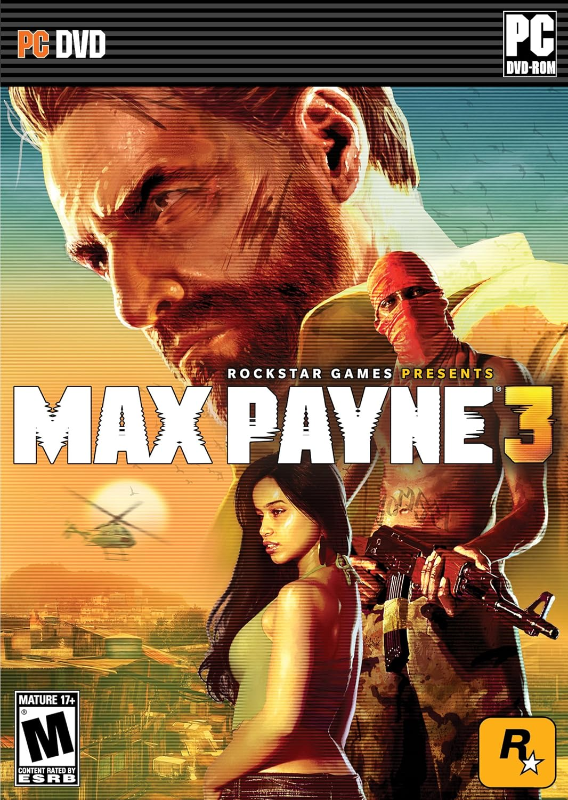

Counter-Strike
Un icónico shooter táctico donde dos equipos compiten en intensos combates estratégicos.
🎬 Trailer

DOOM Eternal
DOOM Eternal es un juego de disparos donde los jugadores asumen el rol del Doom Slayer.
🎬 Trailer
Call of Duty: Modern Warfare
Una experiencia de combate moderna y realista con una campaña intensa.
🎬 TrailerCyberpunk 2077
Un RPG de acción en un mundo futurista con intensos combates y una historia envolvente.
🎬 TrailerRainbow Six Siege
Estrategia táctica en equipo con operadores especializados y destrucción ambiental.
🎬 Trailer

Max Payne 3
Un shooter en tercera persona con una historia cinematográfica y mecánicas de bullet-time.
🎬 Trailer
Just Cause 4
Explosiones, destrucción y un gancho multifuncional en un enorme mundo abierto.
🎬 Trailer


Metro Exodus
Supervivencia en un mundo post-apocalíptico con intensas mecánicas de combate.
🎬 Trailer